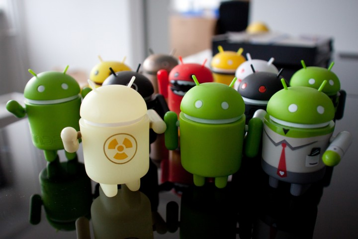

Sim, os consumidores tiveram acesso ao Android apenas em 2008, mas o desenvolvimento da primeira versão do sistema operacional começou pelo menos cinco anos antes, em 2003. Foi nessa época que uma equipe formada por Rich Miner, Nick Sears, Chris White e Andy Rubin criaram uma companhia chamada Android Inc.
O nome “Android” foi escolhido pelo fato de Rubin ser um apaixonado por robôs – e também por deter a propriedade do domínio android.com, que era o seu site pessoal. O grupo imaginava transformar o então novato Android em um SO para câmeras fotográficas, mas o mercado não se mostrou muito interessado. A segunda opção foi investir em celulares.
Apesar de a ideia parecer promissora, o grupo em si não conseguiu ser bem-sucedido, mas o projeto chamou a atenção do Google. No início de 2005, a Gigante de Mountain View estava interessada em um SO para celulares e fez uma proposta: US$ 50 milhões pelo Android e sua equipe.

As primeiras versões do Android
A primeira versão do Android era bastante simples, mas já trazia recursos como tela de bloqueio, função copiar e colar, notificações, player de música nativo, além dos apps do Google embarcados. Naquele momento, parecia difícil fazer frente ao iOS, da Apple, que já era um sucesso de mercado nos iPhones.
A evolução foi rápida, mas demorou para que o Android fosse considerado um sistema operacional maduro pelos consumidores. Foi preciso esperar até 2013, quando chegou ao mercado a versão 4.4 (KitKat) para que o SO fosse visto como um rival à altura da Apple. E mais: dali em diante o Android assumiria a liderança no mercado para nunca mais perder esse posto.
Todas as versões do Android
É curioso notar ainda que desde sempre a empresa escolheu nomes de doces em ordem alfabética para nomear as suas versões.
Essa tradição durou até 2019, quando o Android passou a ser batizado apenas pela sua versão e não mais pelo nome de um doce.
A ideia nasceu em uma brincadeira interna dos desenvolvedores, mas se tornou uma marca registrada da plataforma, com grande aceitação por parte do público.
1.0 - Petit Four
1.5 - Cupcake
1.6 - Donut
2.0 - Eclair
2.2 - Froyo
2.3 - Gingerbread
4.0 - Ice Cream Sandwich
4.1 - Jelly Bean
4.4 - KitKat
5.0 - Lollipop
6.0 - Marshmallow
7.0 - Nougat
8.0 - Oreo
9 - Pie
10 - Android 10
11 - Android 11
Infelizmente, o Android Q não existiu, pois o Google resolveu pôr fim a essa divertida prática e começou a utilizar
númerações, o que deu origem ao Android 10.
O futuro do Android
Olhar para o passado e conferir a evolução do sistema operacional Android nos coloca inevitavelmente diante de outra pergunta:
qual será o futuro do SO? Hoje ele está presente não apenas em smartphones
e tablets, mas também em smartwatches, automóveis, aparelhos de TV, eletrodomésticos e muito mais.
O aumento na demanda por dispositivos compatíveis com a chamada Internet das Coisas faz com que o sistema
seja uma alternativa viável para centenas de outros equipamentos que precisam se conectar à rede. O uso de
comandos de voz parece ser uma das formas mais buscadas pela indústria hoje.
Estima-se que hoje existam mais de 3 milhões de apps na Play Store, um ecossistema que não deixará de ser o
mais relevante do mercado da noite para o dia. São mais de 2,5 bilhões de usuários no mundo. No Brasil, 9
em cada 10 pessoas têm um smartphone com o sistema operacional do Google no bolso. Ao que tudo indica, podemos esperar um reinado do Google ainda pela próxima década se nada de revolucionário desembarcar no mercado.
História Da Apple
Para um público mais jovem, a ideia da Apple (AAPL) não dominar a moderna paisagem tecnológica pode ser inconcebível.
Mas a Apple é uma empresa que existe há décadas, muito antes de criarem telefones. Eles, como qualquer outra empresa, tiveram alguns tempos turbulentos com sucessos e fracassos, realizações memoráveis e anos de lutas.
A companhia atual da Apple não é a Apple de 1984 ou a Apple do início dos anos 90. Mas os foco dos criadores da empresa, e cada passo ao longo do caminho, ajudaram a levá-los para onde estão agora – a primeira empresa a ser avaliada em US $ 1 trilhão.
Como você consegue uma companhia de trilhões de dólares? Aqui está a história da Apple, seus altos e baixos, e onde está hoje.
Quando você pensa sobre a figura por trás da Apple, Steve Jobs imediatamente vem à mente para todos, e talvez Steve Wozniak também. A dupla passou a representar o total do que a Apple se tornou, Wozniak, o especialista em tecnologia, e Jobs, o guru do marketing.
Sua parceria se estende até a adolescência de Jobs, quando eles foram apresentados um ao outro pelo amigo em comum Bill Fernandez. Jobs ainda estava no ensino médio enquanto Wozniak frequentava a Universidade da Califórnia, em Berkeley. Os dois estavam ligados por um amor compartilhado por tecnologia e brincadeiras.
Não demorou muito para que sua parceria assumisse o que se tornaria uma forma familiar: Jobs como o rosto e Wozniak trabalhando nos bastidores. Jobs estava trabalhando na Atari no início dos anos 1970 e foi encarregado de trabalhar no jogo Breakout. Woz não estava trabalhando lá, mas ajudou Jobs a reduzir o número de chips lógicos enquanto criava a placa de circuito.
Como a Apple foi fundada?
Jobs e Wozniak se encontraram novamente em 1975 no Homebrew Computer Club, um clube local para entusiastas da computação. Inspirado pela atitude DIY (Faça você mesmo), Wozniak saiu e criou seu próprio computador doméstico.
Esta é uma maneira modesta de descrever uma criação que muda o jogo; O computador de Woz foi o primeiro a se conectar a uma televisão, gerando personagens com um teclado inspirado na máquina de escrever e exibindo-os com sucesso na tela da TV. Inconscientemente, ele havia criado o primeiro arquétipo do que o PC doméstico comum mais tarde se tornaria. Seu empregador, a Hewlett-Packard também não sabia disso e rejeitou o design várias vezes
Jobs, por outro lado, viu o potencial no computador imediatamente. Ele convenceu Wozniak de que eles poderiam fazer um negócio, e depois de vender alguns de seus pertences por dinheiro, eles e o colega de Jobs na Atari Ronald Wayne, formaram a Apple Computers. O computador de Wozniak ficou conhecido como Apple I.
Jobs fez um acordo com a loja de informática local The Byte Shop para vendê-los, e o gerente da loja teve que confirmar isso para um distribuidor de eletrônicos antes que eles pudessem obter suas peças. Por fim, 200 computadores Apple I foram criados.
Apple sem Steve Jobs
Nem tudo foi ótimo para a Apple durante esse período, no entanto. O relacionamento de Steve Jobs com o CEO John Sculley azedou, e suas diferenças de opinião sobre o que a empresa deveria estar focando chegaram a um ponto de ruptura. Embora o Macintosh tivesse vendas iniciais sólidas, estava lutando para superar o IBM PC e, como o Macintosh era agora visto como o projeto de Jobs, o Conselho de Administração da Apple estava do lado de Sculley. Tendo pouca influência na Apple, ele vendeu suas ações na empresa e deixou o cargo.
O início da era sem Jobs da Apple começou bem. O Macintosh continuou a se desenvolver e vender bem, e a empresa ainda vendia o Apple II. Mas seus projetos nos anos 90 fizeram ondas limitadas no mundo da computação e, como Bill Gates e Microsoft passaram de favoritos tecnológicos para nomes familiares, a Apple se tornou uma força muito menos relevante.
Não que eles não continuassem a lançar produtos. Esta foi a época em que a Apple primeiro lançou um dispositivo de tecnologia touch screen, com o Newton, por exemplo. Mas foi muito menos agitado do que os primeiros dias da tecnologia inovadora e comerciais dirigidos pelos principais diretores de cinema.
O presente: Os anos de Tim Cook
Em 2011, Steve Jobs renunciou como CEO da Apple devido a preocupações com a saúde, e funcionário de longa data e COO anterior, Tim Cook foi anunciado como seu substituto.
A era Tim Cook, da Apple, tem visto a empresa continuar a manter seu lugar no topo da indústria de tecnologia. Até mesmo produtos mais recentes que foram criticados, como o Apple Watch, venderam bem. iPhones, MacBooks e iPads continuam lançando modelos novos e aprimorados com atualizações constantes dos sistemas iOS e MacOS.
Como vimos em todo o texto acima, a Apple, que hoje é uma das maiores empresas de todo o mundo e está cem por cento estável, teve momentos a beira da falência. No entanto, ela sempre conseguiu se manter e se reerguer depois.